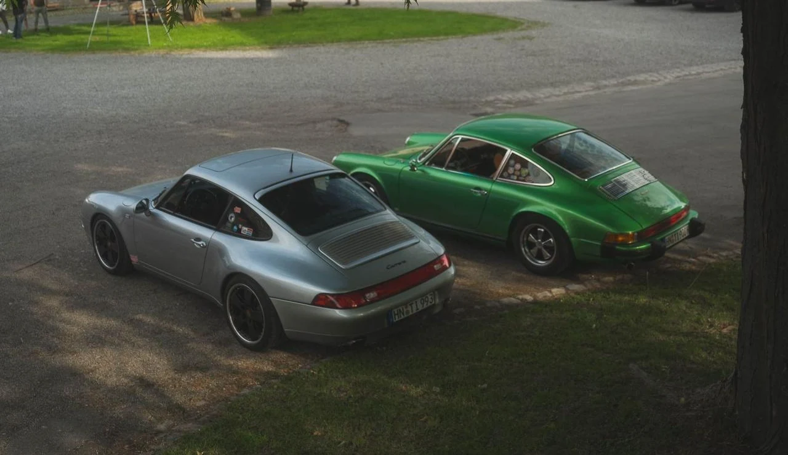

PORSCHE
01Zwei Klassiker. Eine Leidenschaft.
Unverwechselbare Silhouetten, über Generationen hinweg.

ZEITLOS SCHÖN. ECHT BESONDERS.Wir finden besondere Automobile und Zweiräder. Und Menschen, die ihre Geschichte weiterschreiben.
Fahrzeug anbieten Fahrzeuge entdeckenOldtimer und Youngtimer, die etwas in uns bewegen. Einblicke in unsere Fahrzeugwelt.
Unverwechselbare Silhouetten, über Generationen hinweg.
Klare Formen. Echte Materialien. Und eine Ausstrahlung, die keine Erklärung braucht.
Ihren Klassiker anbietenDie gezeigten Fahrzeuge sind Bildbeispiele. Angaben zu Baujahr, Historie und Verfügbarkeit werden ergänzt.
Manchmal braucht Freiheit nur zwei Räder. Wir begeistern uns für klassische Motorräder, Mopeds und die Geschichten, die mit ihnen unterwegs sind.
PUCH X30 TURBOEin Einblick in unsere Zweiradwelt.
Fahrzeugdaten und Status folgen.
Staubig, nicht fahrbereit oder schon gepflegt: Wir suchen Klassiker in jedem Zustand. Mit Leidenschaft und dem Blick fürs Detail bringen wir sie wieder auf die Straße.


Sie möchten Ihren Klassiker weitergeben? Wir machen den ersten Schritt einfach.
Erzählen Sie uns von Ihrem Fahrzeug. Ein paar Eckdaten und aussagekräftige Bilder helfen uns, einen ersten Eindruck zu gewinnen.
Wir sehen uns Ihr Angebot in Ruhe an und melden uns persönlich. Gemeinsam besprechen wir Zustand, Geschichte und Ihre Vorstellungen.
Passt das Fahrzeug zu uns, stimmen wir Besichtigung, Kauf und Übergabe miteinander ab. Klar, direkt und ohne Umwege.
Fahrzeuge, Begegnungen und die kleinen Details dazwischen.
Hier entsteht unser Referenzarchiv. Konkrete Ankaufs- und Vermittlungsgeschichten ergänzen wir mit den bestätigten Fahrzeugangaben.
Für das, was bleibt.
Für uns beginnt die Begeisterung lange vor dem Kauf. Beim Entdecken, beim genauen Hinsehen und im Gespräch mit den Menschen, die ein Fahrzeug geprägt haben.
Wir suchen deutschlandweit besondere Automobile und Zweiräder. Dabei wählen wir bewusst aus: mit Blick für Qualität, Geschichte und Charakter. Wir möchten Klassiker wertschätzen und an Menschen weitergeben, die diese Begeisterung teilen.
Persönlicher Kontakt gehört für uns genauso dazu wie eine unkomplizierte Abwicklung. Von Liebhabern. Für Liebhaber.
Lernen wir Ihren Klassiker kennenOldtimer, Youngtimer oder klassisches Zweirad –
wir freuen uns darauf, Ihr Fahrzeug kennenzulernen.
Ein paar Informationen sind der Anfang. Nach Prüfung Ihres Angebots melden wir uns persönlich bei Ihnen.
Ihr Fahrzeugangebot ist eingegangen. Wir prüfen Ihre Angaben und melden uns persönlich bei Ihnen.
Zurück zur Startseite